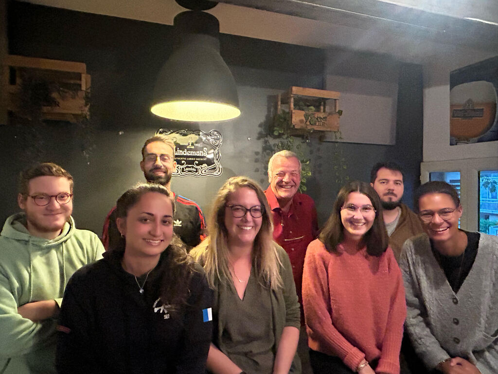
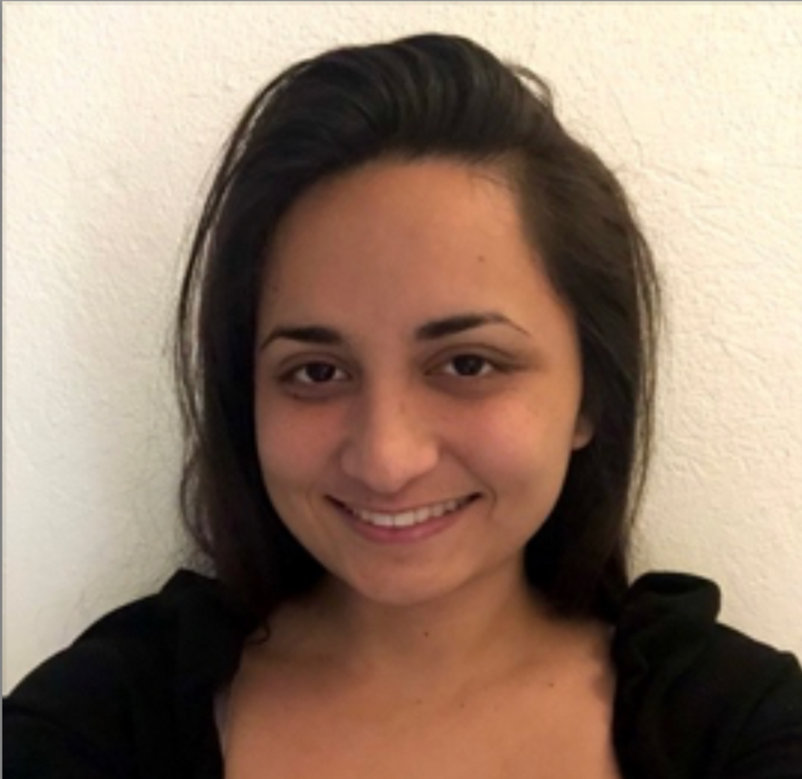
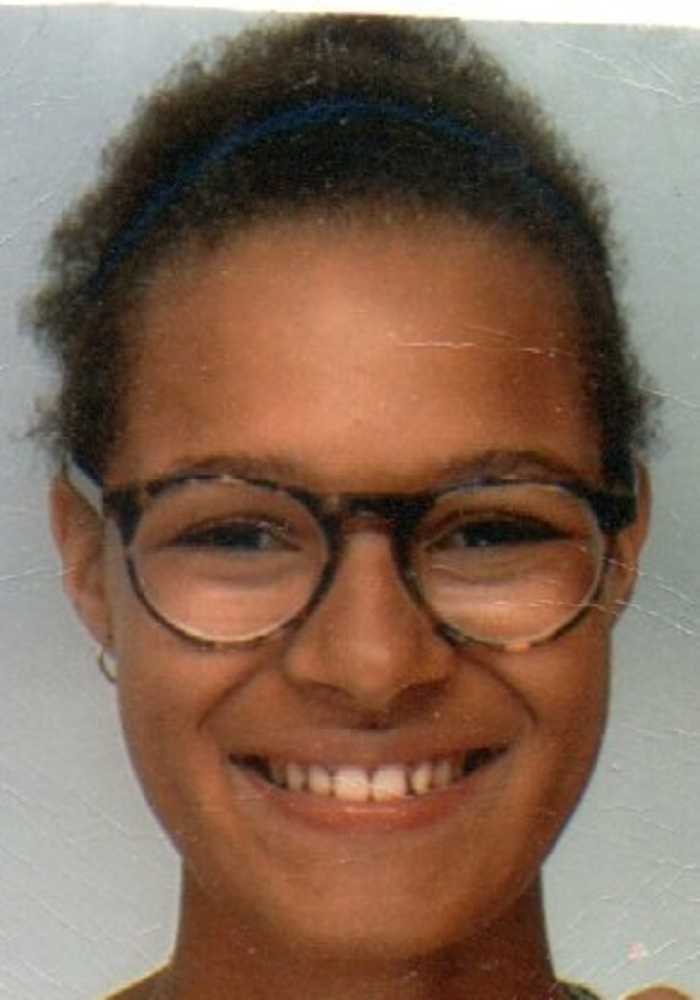
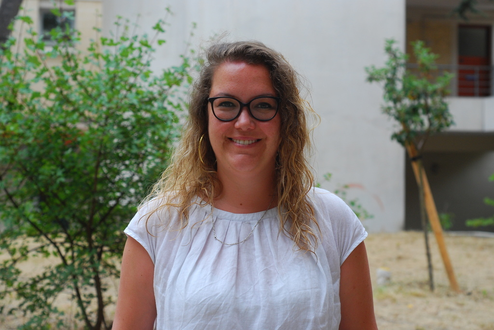

🍃 Connect Newsletter #10 - sept 2022
Marhaban, Bem-vindo, Benvenuto, Bienvenido, Bienvenue… Welcome (back) to Connect, la newsletter de la Communauté du Collège Camille Claudel !
Cette année scolaire commence avec plein de nouvelles fraîches. Nous avons un nouveau principal, un nouveau CPE et un nouveau souffle qui anime déjà tout le collège mais… c’est toujours la même vieille newsletter qu’auparavant ;-)
🍃Dans cette édition:
🙋🏻♂️Un mot de notre nouveau principal…
🎶Rentrée en Musique
🗳️Les Elections des Parents d’Elèves
🙋🏻♀️🙋🏼On vous présente les Assistants d’Education
🎤 « La chorale, ça vous chante ? »
🛋️Ecouter des contes au collège
🔍 Comment chercher un stage en 3ème ?
🥂Rencontres conviviales au collège
😃Le FSE : Foyer Socio-Educatif
⚾Baseball Day Section Internationale
🌳 Visite au Jardin des Plantes
📽️ "What a trip!" à Pièrrevives
❤️ et finalement....
🎶Rentrée en Musique
🗳️Les Elections des Parents d’Elèves
🙋🏻♀️🙋🏼On vous présente les Assistants d’Education
🎤 « La chorale, ça vous chante ? »
🛋️Ecouter des contes au collège
🔍 Comment chercher un stage en 3ème ?
🥂Rencontres conviviales au collège
😃Le FSE : Foyer Socio-Educatif
⚾Baseball Day Section Internationale
🌳 Visite au Jardin des Plantes
📽️ "What a trip!" à Pièrrevives
❤️ et finalement....
🙋🏻♂️Un mot de notre nouveau principal…
Nommé Principal du collège Camille Claudel depuis le 1 er septembre 2022, je suis ravi de pouvoir vivre cette nouvelle étape de ma carrière professionnelle. Proviseur adjoint du lycée Clémenceau pendant cinq belles années, c’est avec une réelle envie de m’investir pleinement dans mes nouvelles fonctions que j’ai découvert le collège Camille Claudel.
Il s’agit en quelque sorte d’un retour aux sources puisque j’ai commencé ma carrière de personnel de direction au collège de Loupian, au bord de l’étang de Thau.
Auparavant, enseignant pendant plus de vingt ans en école primaire, collège et lycée
professionnel, j’ai travaillé dans les académies de Toulouse et Versailles avant d’être nommé
à Montpellier.
professionnel, j’ai travaillé dans les académies de Toulouse et Versailles avant d’être nommé
à Montpellier.
Dès mon arrivé au collège Camille Claudel j’ai pu apprécier le professionnalisme, la motivation sans faille et l’esprit positif de l’ensemble des personnels et de tous les partenaires que j’ai pu rencontrer. Nous travaillons tous dans un cadre agréable, à l’ombre d’arbres bienveillants et dans une ambiance résolument positive depuis la rentrée.
Je mettrai toute mon énergie à poursuivre le travail engagé par mes prédécesseurs et à améliorer encore les conditions de vie et de travail de l’ensemble des personnes de la communauté éducative et des élèves de notre collège. Le bien-être des personnels et des élèves contribue à la réussite de tous.
Travailler en équipe, responsabiliser les élèves, accompagner chacun (personnels et élèves) vers un épanouissement personnel et professionnel, tels sont mes objectifs principaux. Pour avoir déjà pris en grande partie la mesure de notre environnement, je sais pouvoir compter pour cela sur les équipes, sur les parents d’élèves, sur les associations et partenaires de notre établissement.
Je suis persuadé que de belles années s’ouvrent pour nous tous et je souhaite à chacun, élèves, personnels, parents d’élèves et partenaires, une excellente rentrée et une belle année scolaire.
M. Anglade, Principal du collège Camille Claudel
🎶Rentrée en Musique
C’est devant tout le collège que Florie (alto), Basile L. (Guitare basse), Basile G. (Euphonium), Aztlan (chant) , Mohamed Amine (chant) ont interprété deux chants avec accompagnement instrumental mardi 20 septembre 2022 de 8h20 à 8h30 dans la cour du collège.
Addicted de Ben l’oncle soul
Down by the salley gardens (traditionnel irlandais).
Bravo à tous nos talents et à ce moment de partage en ce début d’année scolaire !
M. Jean-Marc Sanchez
🗳️Les Elections des Parents d’Elèves
Les élections des représentants des parents d’élèves auront lieu le vendredi 7 octobre. Ces élections sont importantes car elles permettent d'élire les parents qui vont siéger au conseil d'administration et dans les différentes commissions du collège. Ces différents conseils sont des lieux d'échange importants où les parents peuvent donner leur avis et faire des propositions. Plus nous serons nombreux à voter le 7 octobre, plus les élus seront représentatifs de l'ensemble des familles du collège.
Pour que votre vote soit comptabilisé correctement, il est important de suivre exactement les consignes. Nous avons préparé ci-dessous un guide étape par étape dans un style qui vous est sûrement familier.

Vous allez recevoir le matériel de vote par l'intermédiaire de vos enfants afin de voter aux élections des représentants de parents d’élèves au Conseil d'administration et au Conseil de Section Internationale.
Conseil d'administration du collège : tous les parents votent
Les 2 parents votent - chacun son enveloppe.
Lisez les notices et les professions de foi.
Choisissez un bulletin de vote de votre liste préférée et glissez-le dans la petite enveloppe rose sans rien écrire dessus.
Glissez l'enveloppe rose dans l'enveloppe blanche.
Fermez l'enveloppe blanche et écrivez votre nom, prénom, adresse et les noms prénoms et classes de vos enfants et signez la.
Conseil de Section Internationale : uniquement les parents d'élèves de section internationale votent
Si vous avez un élève dans la Section Internationale (SI), vous devez également voter pour les représentants au conseil de la SI. Le processus est le même que pour le conseil du collège sauf que vous choisissez parmi les bulletins SI et vous glissez l’enveloppe bleue dans l'enveloppe marron. Vous fermez l'enveloppe marron et écrivez votre nom, prénom, adresse et les noms prénoms et classes de vos enfants et signez la.
Déposez votre vote au collège
Déposez vos enveloppes de vote dans les urnes au collège, par correspondance à la vie scolaire (les élèves peuvent les déposer dès lundi 3 octobre) ou en personne au bureau de vote dans la salle de permanence le vendredi 7 octobre de 12h à 16h50.
🙋🏻♀️🙋🏼On vous présente les Assistants d’Education

Les AED du collège Camille Claudel avec le CPE M. Des Pallières.
La rentrée 2022-2023 au collège Camille Claudel présente un renouvellement quasi-total de la vie scolaire. Les qualités de la nouvelle équipe installée se dessinent dans la riche diversité des profils des Assistants d’Éducation (AED), de leurs parcours professionnels et de leurs personnalités. Autant de spécificités qui viendront enrichir les échanges d’expériences avec les collégiennes et les collégiens.
Arthur Marie : Actuellement en Licence 3 STAPS pour devenir à terme professeur d’EPS, Arthur est titulaire d’un Master 2 en Communication Publique et Institutionnelle. Il a pratiqué pendant 12 années le basket-ball au niveau national. En plus du sport, il porte un intérêt particulier à l’actualité politique ainsi qu’à la cuisine asiatique.
Maxime Docteur : Master 2 en Musicologie médiévale. Diplôme de secourisme PSC1. Engagement associatif au CIMM (Centre International de Musiques Médiévales) avec l’organisation de festivals, ou en tant que chanteur Grégorien. Maxime donne également des cours de guitare et de piano auprès d’adolescents.

Manihini
Manihini Lefort : 3ème année de Licence LLCER Anglais pour devenir professeur d’Anglais. Manihini assemble les saveurs de la cuisine tahitienne, comme la recette « E’ia Ota » du poisson cru au lait de Coco. Manihini est transportée par les sports de glisse et particulièrement pour le Wakeboard tracté par ces rapides bateaux offshore, entre les magnifiques lagons bleus turquoises de Polynésie, sous le soleil de la petite île de Huahine.

Kleya
Kléya Go : 2ème année de Licence LLCER Espagnol afin de poursuivre sur un Master MEEF et ensuite passer le concours de CPE. Passionnée de musique, Kléya donne de sa voix alto dans une chorale Gospel et participe à des concerts sur la région.
Emma Szymanski : Licence en droit privé et actuellement licence en psychologie en vue de travailler en tant que psychologue clinicienne avec un public d’enfants ou de jeunes adultes. Engagement associatif au sein du comité des fêtes de Tautavel pour l’organisation d’événements
locaux sur l’année, Brasucades de châtaignes ou d’oignons frais : « Castagnades », « Calçotades » et autres fêtes de villages à la Catalane.
locaux sur l’année, Brasucades de châtaignes ou d’oignons frais : « Castagnades », « Calçotades » et autres fêtes de villages à la Catalane.
Dorian Vlaeminck : Master-SNS en Physique Biomédicale, Brevet de Technicien Supérieur dans l’aéronautique, rédacteur de notices techniques chez « Eurocopter ». Créateur de Jeu de Rôle et maître de jeu, amateur de cinéma avec un goût prononcé pour la S.F et les inévitables Blade
Runner et Conan le barbare…
Runner et Conan le barbare…
Garance Hemon : Brevet Professionnel de la Jeunesse de l’Education Populaire et Sportive (BPJEPS) Animation sociale. Animatrice périscolaire. Diplôme de secourisme PSC1-BSB. Garance assure au collège la mission « Technologies de l'Information et de la Communication pour l'Enseignement » (TICE) qui a aussi pour synonyme « informatique et réseaux ».

Garance
Garance est également AED d’internat au lycée MERMOZ. Elle projette prochainement de passer le concours interne de « Secrétaire administratif ». Garance aime le sport. Entre 8 et 18 ans, elle a participé aux championnats départementaux de hand. Cette année, avec d’autres collègues du collège, elle teste le « KICK’n FORME », ce subtil mélange entre les arts martiaux et le fitness, tout en musique….
Grégory Georges : Licence STAPS, éducateur sportif, animateur périscolaire, admis à l’école de Police pour intégrer à terme les services de Police Secours. Aime cuisiner, notamment les recettes de Guyane… avec le fameux Colombo, ce plat emblématique de la cuisine antillaise et guyanaise.
Propos recueillis par M. Stéphane des Pallières CPE
🎤 « La chorale, ça vous chante ? »
Voici notre traditionnel appel à candidature ! Comme vous l’avez lu peut-être sur Pronote chers parents, l’option chant choral du collège a ouvert ses inscriptions depuis la rentrée : tous les élèves peuvent y participer : pas de concours ou de compétition. Aucune sélection : tout le monde sera gagnant et valorisé au sein d’un projet collectif. Dépasser le nombre de 30 inscrits ne nous fait pas peur dans notre spécialité, bien au contraire ! Cependant, L’engagement est obligatoire sur une année complète afin de ne pas gêner la réussite du projet qui aura une prestation publique, programmée à la Maison des chœurs au mois de mai, comme aboutissement, ainsi que la réalisation d’un clip vidéo (titre à choisir par l’équipe académique de professeurs d’éducation musicale et chant choral) par l’association régionale des chorales et orchestres scolaires (Arecos) dont je suis le secrétaire par ailleurs.
Dans le cadre de l’option, une sortie pourra être programmée pour assister à une répétition générale à l’opéra Comédie ou au Corum (spectacle lié à la voix).
M. Jean-Marc Sanchez
🛋️Ecouter des contes au collège
Depuis plusieurs années, deux conteuses viennent chaque semaine nous proposer des contes et c'est un beau moment de rêve que nous partageons ensemble à chaque fois. C'est tout à fait facultatif, aucune obligation d'être présent à chaque séance, - et pas de compte rendu à préparer non plus ! Rassurez-vous, ce ne sont pas des contes pour les bébés ! Alors de la 6ème à la 3ème, vous êtes tous les bienvenus.
Cette année, ce sera tous les lundis de 13h à 13h30 dans la salle de musique. Une seule condition : être curieux et se laisser porter par le plaisir d'écouter.
La première séance aura lieu lundi 26 septembre. Venez vous faire votre opinion, et si vous avez oublié ou que vous n'êtes pas disponible, écoutez les commentaires des copains et rejoignez-nous la fois suivante ! Cliquer pour plus de détails sur le club ContiMundi
Mme Claire Laplace
🔍 Comment chercher un stage en 3ème ?
Les élèves de 3ème doivent effectuer un stage d’observation. Il devra avoir lieu la dernière semaine avant les vacances de Noël, soit du lundi 12 au vendredi 16 décembre 2022.
Il faut donc commencer à prospecter dès à présent afin d’avoir… l’embarras du choix.
Il est conseillé de suivre différentes étapes.
Tout d’abord, il est utile que les élèves fassent le point sur leurs goûts, qu’ils réfléchissent à ce qu’ils aiment faire, aux endroits où ils se sentent bien … il ne faut fermer aucune piste ; le stage peut se faire dans une grande ou une petite entreprise, dans une association, chez un artisan, chez un commerçant, dans une administration, etc… et il n’est pas nécessaire que le stage soit en lien avec un projet de métier.
Ensuite, il est pertinent de réfléchir à quelques idées pour rédiger les lettres de motivation (le même modèle, décliné en différents exemplaires, avec différents arguments selon le stage demandé) et de mettre au point un curriculum vitae (C.V.). Là aussi, il est recommandé de ne pas se censurer mais inscrire ses qualités, les compétences acquises dans de multiples domaines (la musique, le dessin, le sport, la pratique de différentes langues, etc…, les expériences petites et grandes).
Il est souhaitable de se rendre ensuite dans différents endroits accessibles afin de se présenter et de déposer C.V. et lettre de motivation si cela n’est pas possible faire un courrier ou un courriel.
Il faut ensuite attendre…
Attendre ne veut pas dire être inactif, d’autres démarches sont possibles. En effet, il est conseillé, parallèlement, de s’inscrire sur le site de LaRégion via l’application Anie (anie.laregion.fr) et d’être ainsi mis en relation avec des partenaires désireux d’accueillir des stagiaires, ou, encore, de solliciter les réseaux des parents ou des connaissances afin d’augmenter les chances de décrocher un stage.
Attention, si le stage n’a pas été trouvé fin novembre, début décembre, il faut en informer le professeur principal. Si les élèves ou leurs parents ont des questions, ne pas hésiter à interroger les professeurs du collège susceptibles d’y répondre: les professeurs principaux, Mme Taoufik, M. Cacciatore.
Des documents : lettres aux familles, conventions de stage vont très prochainement être distribués, ne pas attendre de les avoir en main pour se lancer …
Ce qu’il faudra faire pendant et après le stage sera, sans doute, l’occasion d’un nouvel article. En attendant, bonnes recherches…
Mme Isabelle Mounime
🥂Rencontres conviviales au collège
Dès la 1ère semaine, les réunions de rentrée ont été organisées dans les classes de nos enfants pour que l'on puisse rencontrer les enseignants et connaître le fonctionnement du collège.
Bien agréable de mettre dès le début une tête sur chaque nom et de connaître l'organisation de chacun! Merci à tous les enseignants d'avoir jonglé entre les différentes classes et de nous avoir présenté leurs programmes et leurs méthodes de travail toutes singulières et intéressantes. Merci au principal d'avoir pris le temps de nous communiquer ses projets dont l'aménagement de la cour...!
Quand on est nouveau au collège, que l'on a l'habitude de l'école primaire où les échanges avec les enseignants à la sortie des classes sont plus faciles et plus nombreux, on se sent vite frustré ou perdu... Nos enfants le sont moins en général et c'est le principal!
Et cette année, belle surprise sous le préau après la réunion: petit apéritif convivial pour tous - parents, élèves, enseignants... - + des propositions d'outils de communication pour échanger avec les parents des classes de nos enfants (listes whatsapp). Voir les enseignants discuter/blaguer avec leurs "anciens" élèves, échanger avec les parents élus, rencontrer des nouveaux parents, cela fait bien plaisir et permet de créer du lien. Ces moments informels autour d'un verre sont toujours importants!
Merci à l'association C4 pour cette belle initiative!
Pauline (parent d'élève)
😃Le FSE : Foyer Socio-Educatif
Le FSE du collège Camille Claudel propose aux élèves différentes activités (clubs pendant la pause méridienne tels que jouer au bridge, rêver en écoutant des contes, soutien à des concours variés et diverses sorties (planétarium, théâtre, cinéma…) et enfin, il permet d’acheter du matériel ( ballons, jeux de société etc).
Les activités du Foyer Socio-éducatif font l'objet, chaque année, d'un compte-rendu en Assemblée Générale au cours du premier trimestre de l'année scolaire. La prochaine réunion se tiendra le mardi 11 octobre à 17h en salle de permanence. Le bureau actuel est tenu par M. Bioulès, le président, assisté par Lilian Albert ; Mme Marie , trésorière, assistée par Lina Taoufik et Mme Armengol , secrétaire, assistée par Mélina Comara.
Mme Sophie Armengol
⚾Baseball Day Section Internationale

Le lundi 29 août les nouveaux élèves de la SIAA des collèges Camille Claudel et Simone Veil se sont rencontrés pour une matinée conviviale de baseball avec les Barracudas de Montpellier. Cette journée annuelle permet à ces élèves, certains arrivant de l'étranger et souvent d'écoles différentes de se connaître un tout petit peu avant l'arrivée au collège.
Sport, goûter et repas tiré du sac: great fun!
Sport, goûter et repas tiré du sac: great fun!
Mme Maguelone Domon
🌳 Visite au Jardin des Plantes
Le 16 septembre, les élèves de la classe de 6D se sont rendus au jardin des plantes pour participer à la journée "Les enfants du patrimoine". La visite guidée du jardin leur a permis de découvrir l'histoire du plus ancien jardin botanique de France. La classe a aussi pu parler de la biodiversité du lieu. De retour au collège, les élèves ont rédigé des poèmes célébrant le jardin ou les plantes et animaux qu'il abrite. Bravo à eux pour leur curiosité et leur créativité !
Mme Pauline Foex
📽️ "What a trip!" à Pièrrevives
Le lundi 19 septembre, à l'initiative de Mme Castes, professeure d'anglais, l'ensemble des troisièmes du collège s'est rendu à Pièrresvives afin d'assister à la projection d'un film documentaire dans le cadre du festival "What a trip!": festival international de film de voyage d'aventure. Les élèves ont vu le film "Alaska-Patagonie, la grande traversée" de Sophie Planque.
Deux aventuriers un peu fous, Sophie Planque et Jérémy Vaugeois, sont partis traverser la route la plus longue du monde... à vélo! Ils ont ainsi parcouru le continent américain du nord vers le sud pendant deux ans et demi, réalisant ainsi un périple de plus de 28 743 km.
Outre la découverte de paysages aussi grandioses que variés, le témoignage de rencontres exceptionnelles, la détermination de deux amoureux de la liberté, les élèves ont pu découvrir les habitants des pays traversés, leurs coutumes, leurs sens de l'accueil et du partage ainsi que l'engagement nécessaire à la réussite de tout projet.
À l'issue de la projection, afin de prolonger l'aventure, un échange s'est engagé avec Jérémy Vaugeois présent dans la salle. Les élèves attentifs pendant la projection se sont intéressés aux différents aspects du voyage: sa logistique, la recherche de l'itinéraire, les aléas de la route, ses dangers et ses extraordinaires surprises...
À travers les questions posées à Jérémy, les élèves ont pu affiner leur perception du film, mieux comprendre les enjeux d'une telle aventure et peut-être... un jour, s'engager à leur tour dans une entreprise qui enrichira d'autres générations.
Mme Isabelle Mounime
❤️ et finalement....
Merci à toutes les personnes qui nous ont partagé ces moments de vie au collège! Nous souhaitons à tous, petits et grands, une très bonne année pleine de joie et de bonne humeur!
Depuis de nombreuses années des ingénieurs de la Société IBM interviennent au collège Camille CLAUDEL pour animer des ateliers robotiques en cours de Technologie avec M CACCIATORE pour toutes les classes de Cinquième. Ils apportent avec eux des Robots de dernière génération MINDSTORMS.